Benchmark Report - AR Diagnostic MVP
Executive Summary
Average SLM Latency
4.067s
General Information
- Environments: desktop-legion, jetson-nano, jetson-orin
- Models: dialogpt, phi, qwen, qwen-cpu
- Batches: batch1, batch2, batch3, batch4, batch5, batch6
Environment Performance
Environment Performance - SLM latency across Nano, Orin, and Legion
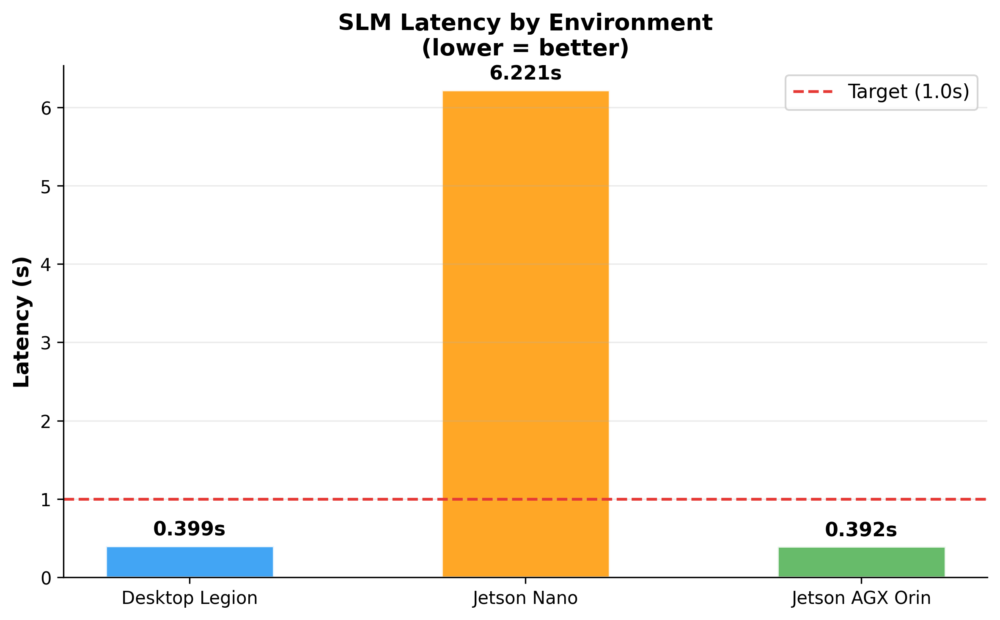
Environment Performance - Throughput across environments
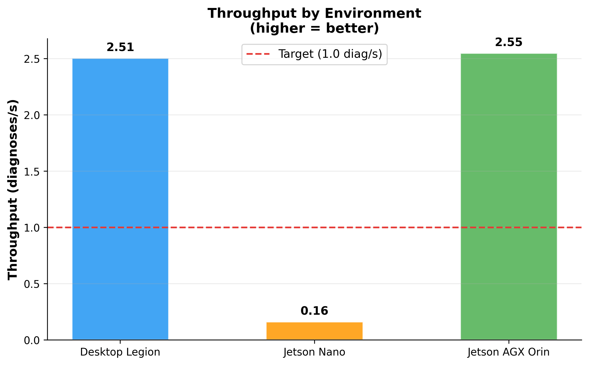
Model Comparison
Model Comparison - SLM latency for DialoGPT, Qwen, and Phi by environment
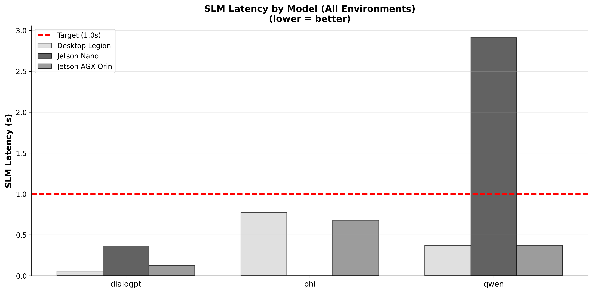
Model Comparison - Accuracy for each model across environments
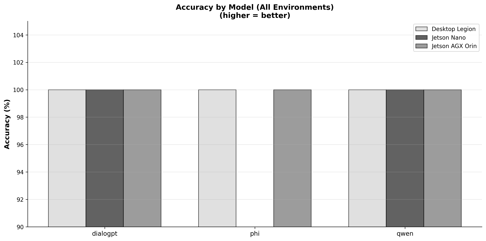
Consistency and Distribution
Accuracy by Batch - Consistency across test batches

Latency Distribution - Variability and outliers across environments

Cross-Environment and Component Analysis
Cross-Environment Speedup - Relative performance against Desktop Legion baseline

PDI vs SLM Analysis - Bottleneck comparison between vision and language components

Per-Environment Performance Analysis
Jetson Nano
Jetson Nano - SLM latency by model
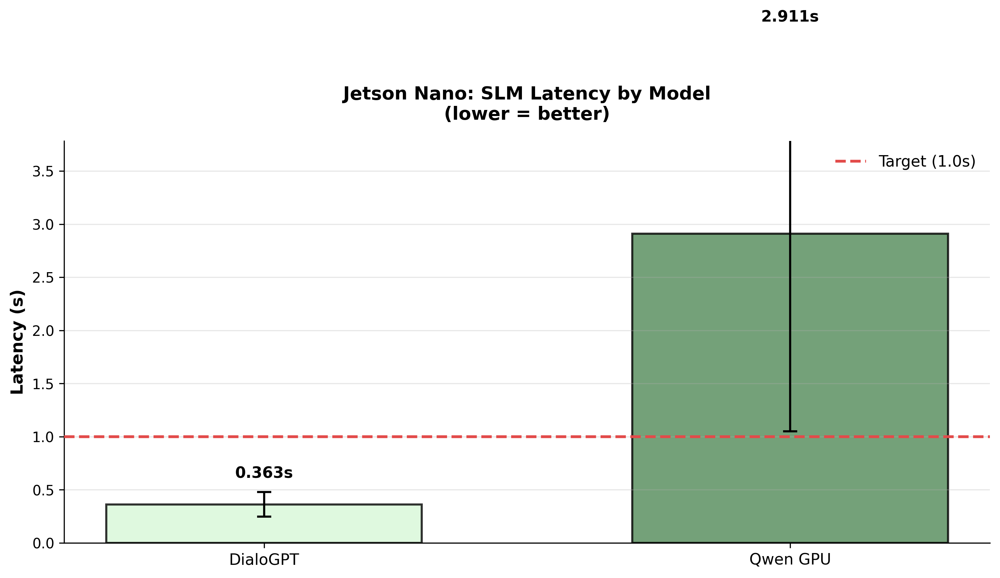
Jetson Nano - Throughput by model
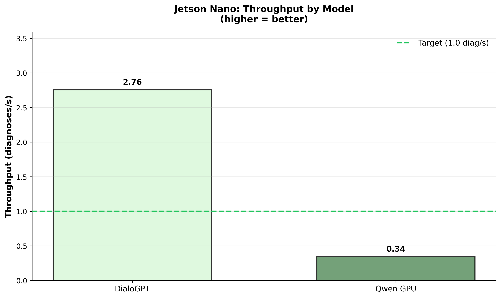
Jetson Nano - Target success rate by model
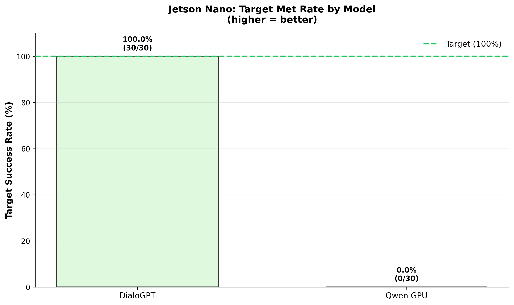
Jetson AGX Orin
Jetson AGX Orin - SLM latency by model
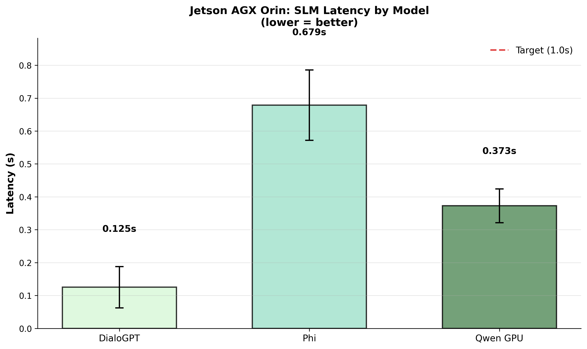
Jetson AGX Orin - Throughput by model
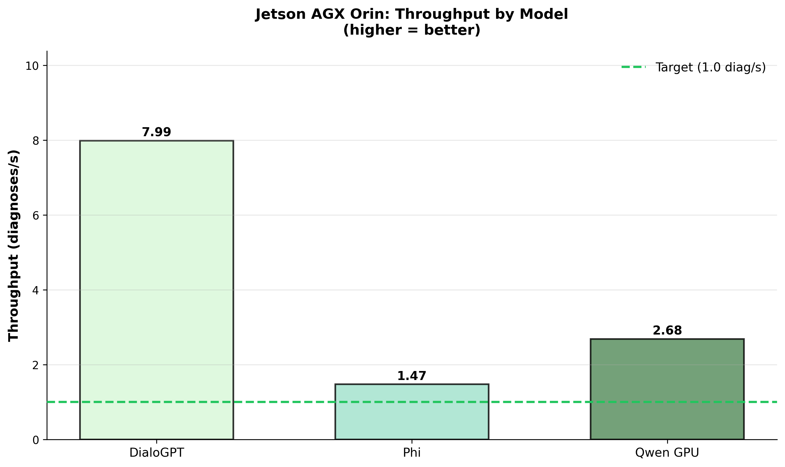
Jetson AGX Orin - Target success rate by model
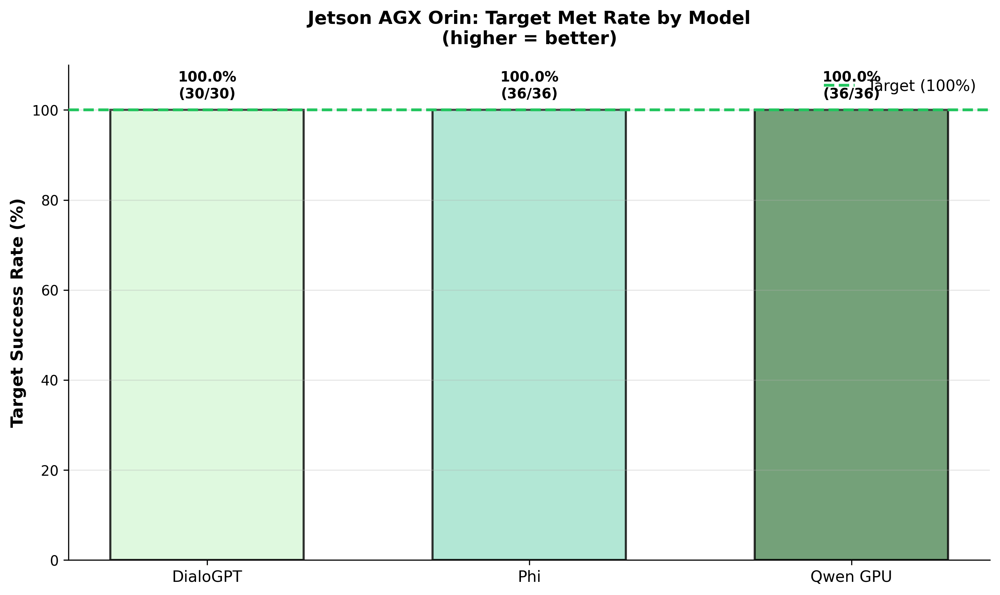
Desktop Legion
Desktop Legion - SLM latency by model
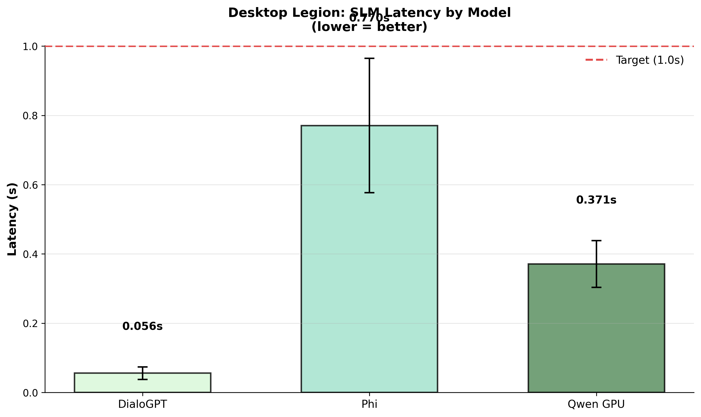
Desktop Legion - Throughput by model
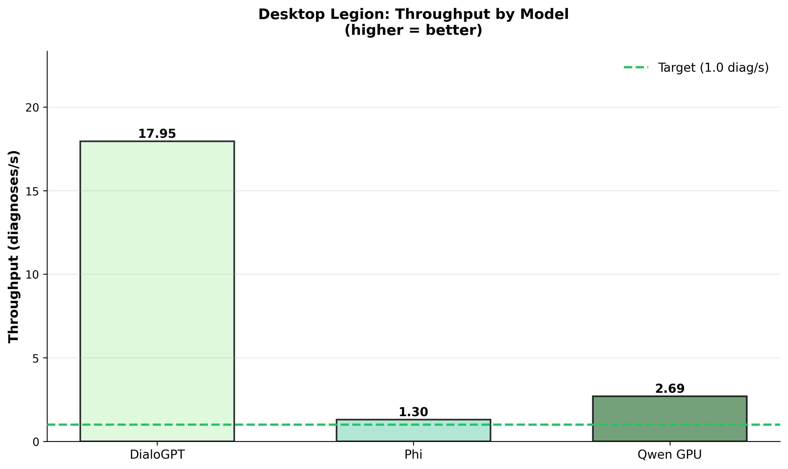
Desktop Legion - Target success rate by model
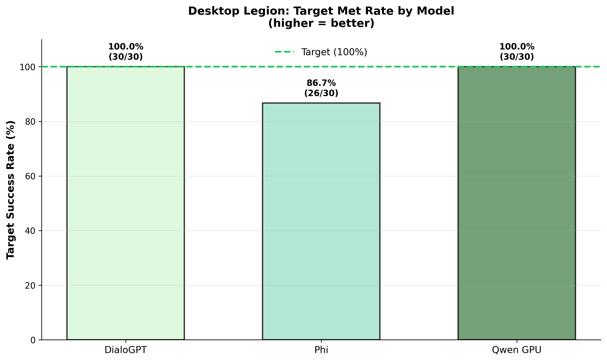
Special Analysis: Qwen CPU vs GPU on Jetson Nano
Qwen on Jetson Nano - CPU vs GPU latency comparison
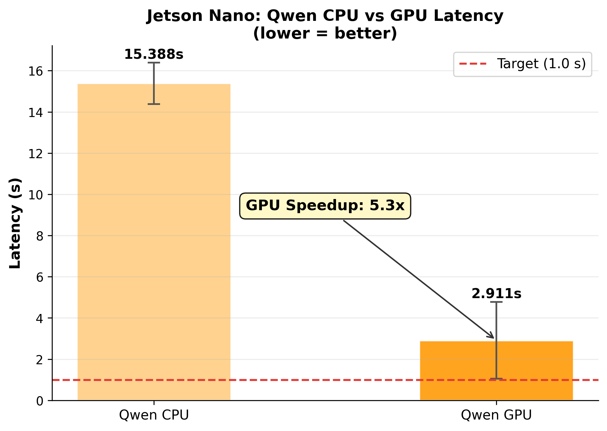
Qwen on Jetson Nano - CPU vs GPU throughput comparison
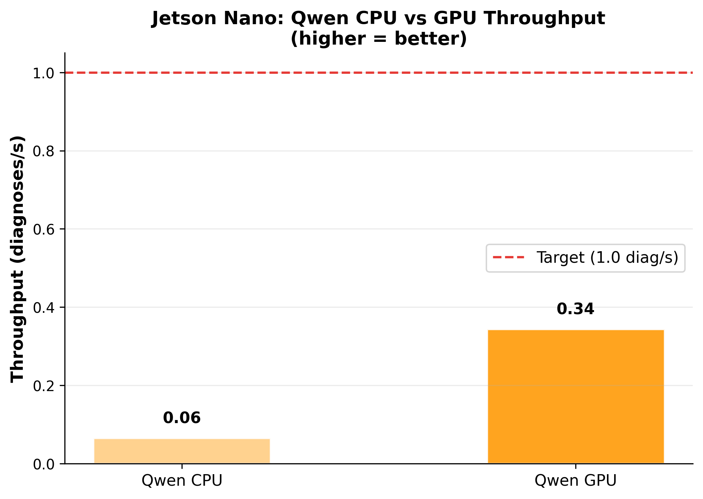
Qwen on Jetson Nano - CPU vs GPU target success rate
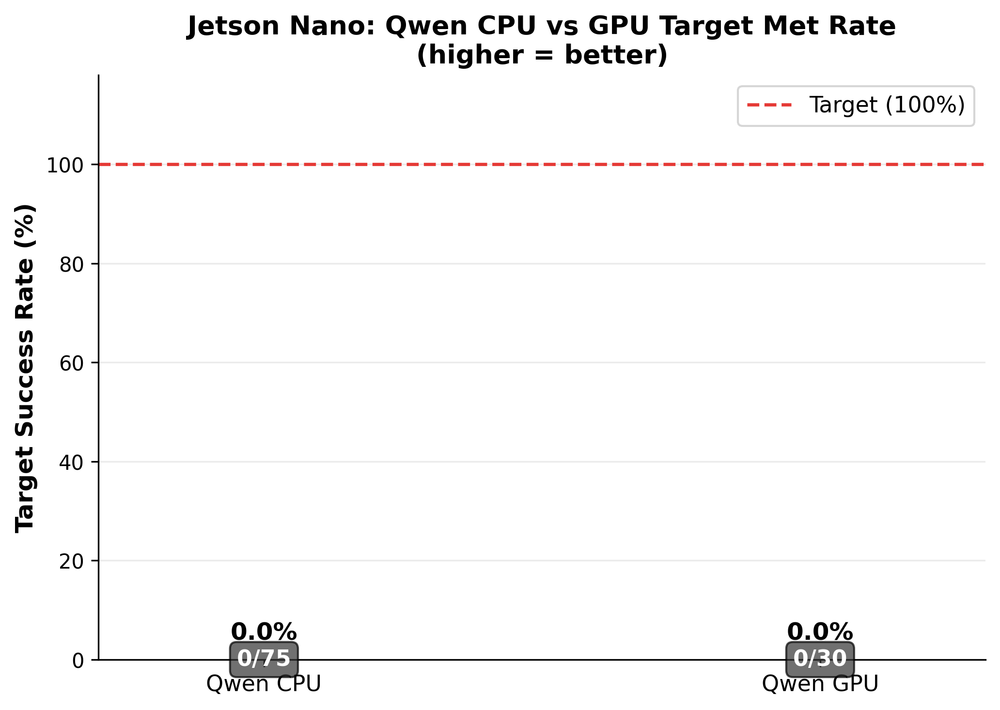